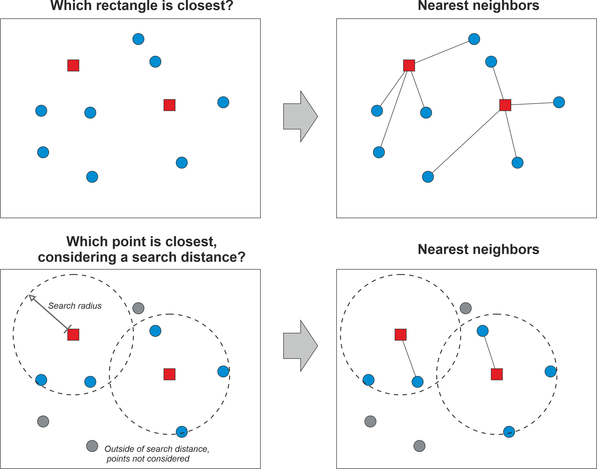

Nearest neighbour analysis#
The idea of neighbourhood is one of the fundamental concepts in geographic data analysis and modelling. Being able to understand how close geographic objects are to each other, or which features are neighboring a specific location is fundamental to various spatial analysis techniques, such as spatial interpolation (which we cover in Chapter 10) or understanding whether there is spatial autocorrelation (i.e. clustering) in the data (see Chapters 6 and 7 in Rey et al., 2023). Many of these techniques rely on the idea that proximity in geographic space typically indicates also similarity in attribute space. For example, it is quite typical that a neighborhood with high population density is next to another neighborhood that also has high concentration of residents (i.e. population density tends to cluster). One of the most famous notions related to this is the First law of geography which states that “everything is related to everything, but near things are more related than distant things” (Tobler, 1970). Thus, being able to understand how close neighboring geographic features are, or which objects are the closest ones to specific location is an important task in GIS.
Figure 6.45 illustrates two common ways to find nearest neighbors to specific locations. In these examples, we have two Point datasets visualized with blue circles and red rectangles that are used for doing the nearest neighbor analysis. In the first example (top row), the idea is to find the closest geometry (rectangles) for all the points in the area. Here, the nearest neighbor is determined based on distance between the points and rectangles, and the nearest neighbors are visualized with a line from every point to the closest rectangle (on the right). The bottom row shows an example in which we aim to find the closest point for each rectangle, but in this case we also apply a maximum search distance that limits the search area. Only those points that are within the search area are considered when finding the nearest neighbor, while the points outside of this area are simply ignored. As a result, the point closest to a given rectangle is visualized with a connected line (on the right). In these examples, the geographic objects are simple point like features, but similar approach can be used with any geographic features, for example by finding closest LineString or Polygon geometry to a given Point, or by finding the closest Polygon to another Polygon. In these cases, the calculations are a bit more complicated, but the basic idea is the same.

Figure 6.46. The basic idea of finding a nearest neighbour based on geographic distance.
Quite often with very large datasets, we might want to limit the search area up to a specific maximum distance. This can be due to practical reasons as it can significantly speed up the computation time, or because we have specific reasoning that makes it sensible to limit the search area. For example, if we would aim to understand how easily accessible public transportation is to citizens living in a city, it would make sense to limit the search area e.g. up to 2 km from the homes of people, because people are not willing to walk for very long distances to reach a bus stop. It’s important to notice that the distances in the calculations are commonly based on the Euclidean distance, i.e. we calculate the distances based on coordinates on a Cartesian plain, meaning that the distances do not consider changes in height (i.e. third dimension is omitted). It is of course possible also to consider 3D distances, but the most typical Python tools ignore the height information.
Nearest neighbour analysis in Python#
In Python, there are various libraries that can be used to find nearest neighbors for given set of geometries, including geopandas, shapely, scipy, scikit-learn, and pysal among others. Here, we first introduce how geopandas can be used to find the nearest neighbors for all Point geometries in a given GeoDataFrame based on Pointobjects from another GeoDataFrame. Then we show how to find nearest neighbor between two Polygon datasets, and finally we show how to use scipy library to find K-Nearest Neighbors (KNN) with Point data.
In the following, we go through a very practical example that relates to our daily commute: Where is the closest public transport stop from my place of residence? Hence, our aim is to search for each building point in the Helsinki Region the closest public transport stop. In geopandas, we can find nearest neighbors for all geometries in a given GeoDataFrame using the .sjoin_nearest() method. To test it out, let’s start by reading two datasets representing buildings and stops and visualize them to understand a bit better what we have:
import geopandas as gpd
import matplotlib.pyplot as plt
stops = gpd.read_file("data/Helsinki/pt_stops_helsinki.gpkg")
building_points = gpd.read_file("data/Helsinki/building_points_helsinki.zip")
print("Number of stops:", len(stops))
stops.head(2)
print("Number of buildings:", len(building_points))
building_points.head(2)
As we can see, both GeoDataFrames contain Point geometries. There seems to be approximately 8400 stops and almost 159 thousand buildings. Hence, we have already a fair amount of data and calculations to do, to find the nearest neighbor for each building. Let’s still visualize these data side-by-side:
fig, (ax1, ax2) = plt.subplots(nrows=1, ncols=2, figsize=(15, 10))
# Plot buildings
building_points.plot(ax=ax1, markersize=0.2, alpha=0.5)
ax1.set_title("Buildings")
# Plot stops
stops.plot(ax=ax2, markersize=0.2, alpha=0.5, color="red")
ax2.set_title("Stops");
Figure 6.47. Maps representing the buildings and public transport stops which we use to find the closest stop for each building.
As mentioned earlier, finding the nearest geometries between two GeoDataFrames (here building and stop points) can be done easily using the .sjoin_nearest() method in geopandas. As the name implies, this method is actually designed to merge data between GeoDataFrames in a similar manner as with regular .sjoin() method. However, in this case the method is actually searching for the closest geometries instead of relying on spatial predicates, such as within. The sjoin_nearest() can be used for different geometry types, so the input geometries do not necessarily need to be Point objects as in our example. Under the hood, the method uses a spatial index called STRTree (Leutenegger et al., 1997) which is an efficient implementation of the R-tree dynamic index structure for spatial searching (Guttman, 1984). The STRTree is implemented in the shapely library (used by geopandas) and the technique makes the nearest neighbor queries very efficient. You can read more about spatial indices in Appendices section of the book. For the method to work properly, it is recommended to ensure that the both GeoDataFrames are having the same coordinate reference system (CRS), and preferably having a projected (metric) CRS because that ensures that the reported distances are meaningful (in meters) and correct. Hence, let’s start by reprojecting our latitude and longitude values into a metric system using the national EUREF-FIN coordinate reference system (EPSG code 3067) for Finland:
stops = stops.to_crs(epsg=3067)
building_points = building_points.to_crs(epsg=3067)
stops.head(2)
Now the GeoDataFrames are surely in the same coordinate system and we can see that the coordinates in the geometry column have changed representing meters. Next, we will use the buildings.sjoin_nearest() to find the closest stop for each building. Because we are interested to find the closest stop geometry for each building, the buildings GeoDataFrame is on the left hand side of the command. As inputs, we pass the stops GeoDataFrame as well as give a name for a column which is used to store information about the distance between a given building and the closest stop (this is optional):
%time
closest = building_points.sjoin_nearest(stops, distance_col="distance")
closest
As a result, we now have found the closest stop for each building including the attributes of the closest stops that were merged into the results. The last column in the table shows the distance in meters between a given building and the closest stop. The distance is only returned upon request as we did by specifying distance_col="distance". The column index_right provides information about the index number of the closest stop in the stops GeoDataFrame. If you look carefully, you can see that the number of rows in our result has actually increased slightly from the original (158731 vs 159818). This happens because for some geometries in the buildings GeoDataFrame, the distance between the building and two (or more) stops have been exactly the same (i.e. they are equidistant). In such cases, the sjoin_nearest() will store both records into the results by duplicating the building information and attaching information from the stops into separate rows accordingly. In some cases, this can cause trouble for further analysis, so it is good to be careful and investigate whether any duplicate buildings have appeared into the results. If this is the case, and if the duplicates cause issues in your analysis, you might need to pick one of them for further analysis based on some criteria. A simple way is to pick the first (or last) duplicate if you do not have any specific justification for making the selection.
The %time command at the beginning of the cell provides us some details about the time it took to find the nearest neighbors and merge the data between the two data sets. As we can see, the computations are very efficient taking only a matter of some microseconds for almost 159 thousand observations. We can make this even faster by specifying a max_distance parameter that specifies the maximum search distance. Here, we specify the maximum distance as 100 meters from each building:
%time
closest_limited = building_points.sjoin_nearest(
stops, max_distance=100, distance_col="distance"
)
closest_limited
As we can see, there was a slight improvement in the execution time compared to the previous call without specifying the max_distance parameter. The difference can be more significant if you have larger datasets or more complicated geometries (e.g. Polygons). One important aspect to notice from these results is that the number of rows has decreased significantly: from 160 to 40 thousand buildings. This happens because our search distance was very low (100 meters), and as a consequence, there were many buildings that did not have any stops within 100 meter radius from them. Because the default join type in sjoin_nearest is inner join, all the records that did not have a stop within 100 meters were dropped. If you would like to keep all the records in the results, to e.g. investigate which buildings do not have any stops within the search radius, you can add parameter how="left", which will retain all buildings from the original GeoDataFrame.
In some cases, you might actually want to connect the nearest neighbors to each other with a straight line. For doing this, we need to merge also the Point geometries from the other layer into our results, which can then be used to create a LineString connecting the points to each other. This can be useful for many purposes, but in our case, we want to do this to be able to validate whether our results are correct. For merging the closest stop geometries into our results, we can take advantage of the index_right column in our table and conduct a normal table join using the .merge() method. Below, we create a table join between the tables using the .merge() and use the "index_right" column in the closest GeoDataFrame as a key on the left table while the index of the stops is used as the key on the right table. Notice that we only keep the geometry columns from the stops GeoDataFrame because all the other attributes already exist in our results:
closest = closest.merge(
stops[[stops.active_geometry_name]], left_on="index_right", right_index=True
)
closest.head()
As a result, we now brought a new column into our results, namely the geometry_y. Because there was a column called geometry in both GeoDataFrames, geopandas automatically renamed the columns into geometry_x and geometry_y respectively.
Now we have all the data that we need to create a connecting LineString between the buildings and the closest stops. We can do this by using the linestrings() function of the shapely library which is a fast (vectorized) way to create a number of LineString objects based on point coordinates (the function only accepts numbers as input, i.e. not Point objects). To extract the point coordinates from the Point objects stored in the geometry_x and geometry_y columns, we use the .get_coordinates() method of geopandas that returns the x and y coordinates as Series objects/columns. Then we convert these into numpy arrays using the to_numpy() method which we pass to the linestrings() function. Finally, we store the resulting LineStrings into a column geometry which we set as the active geometry of the GeoDataFrame:
from shapely import linestrings
closest["geometry"] = linestrings(
closest.geometry_x.get_coordinates().to_numpy(),
closest.geometry_y.get_coordinates().to_numpy(),
)
closest = closest.set_geometry("geometry")
closest.head()
Great! Now we have created a new geometry column that contains the lines between buildings and the closest stops. To better understand the results, let’s create a nice map that visualizes the buildings, stops and the connecting lines between the buildings and the closest stops in a single figure:
ax = closest.plot(lw=0.5, figsize=(10, 10))
ax = building_points.plot(ax=ax, color="red", markersize=2)
ax = stops.plot(ax=ax, color="black", markersize=8.5, marker="s")
# Zoom to specific area
ax.set_xlim(382000, 384100)
ax.set_ylim(6676000, 6678000);
Figure 6.48. A map showing the buildings (red points), the stops (black rectangles) and the lines between the buildings and the closest stops.
As we can see from the Figure 6.48, the nearest neighbor search have worked well as planned, and each building marked with red color has been correctly connected with a line to the closest stop. The map reveals that there are multiple isolated stops that do not have any buildings connected to them. As a practical example, this information could be used e.g. for transport planning by investigating whether these isolated stops are less used by citizens to get on board of the public transport vehicles. This information could again be used by transport planners to decide whether there is a need to maintain these isolated stops. Thus, with these rather simple computations, one can already provide useful information that has relevance in real life. Finally, because we have calculated the distance between buildings and the stops, it is easy to do some descriptive analysis based on this data providing information about levels of access to public transport in the region:
closest["distance"].describe()
As we can see, the average distance to public transport in the region is around 230 meters. More than 75 % of the buildings seem to be within within 3.5 minute walking time (~260 meters with walking speed of 4.5 kmph) which indicates very good situation in terms of accessibility levels in the region overall. There seem to be some really remote buildings in the data as well, as the longest distance to closest public transport stop is more than 7 kilometers.
Nearest neighbors with Polygon and LineString data#
In some cases, you might need to find the closest neighbors for a given set of Polygons or LineStrings. Luckily, the sjoin_nearest() method works in a similar manner with all geometry types, i.e. you can find the nearest neighbors using Point, LineString, Polygon, MultiPoint, MultiLineString and MultiPoint geometries as input. Also finding nearest neighbors between different geometry types is supported, meaning that you can for example search nearest LineStrings to Polygons, and so on. When using more complex geometries as input (e.g. LineStrings or Polygons), the nearest neighbor search uses spatial index, i.e. it creates bounding boxes around the input geometries and inserts them into an R-Tree which is used to make the search queries more efficient. However, the distance between the nearest neighbours is measured based on the true shapes of the geometric features. In the following, we demonstrate how to conduct nearest neighbor analysis with more complex geometries, such as Polygons and LineStrings.
As a real-life case, we first aim to find the closest urban park to building polygons in a neighborhood called Kamppi, which is located in Helsinki, Finland. Then, we aim to find the closest drivable road (LineString) to each building. Let’s start by reading the data and visualize it on a map:
import geopandas as gpd
buildings = gpd.read_file("data/Helsinki/Kamppi_buildings.gpkg")
parks = gpd.read_file("data/Helsinki/Kamppi_parks.gpkg")
roads = gpd.read_file("data/Helsinki/Kamppi_roads.gpkg")
buildings
# Plot buildings, parks and roads
ax = buildings.plot(color="gray", figsize=(10, 10))
ax = parks.plot(ax=ax, color="green")
ax = roads.plot(ax=ax, color="red")
Figure 6.49. A map showing the buildings with gray color and the parks (green) in the neighborhood of Kamppi, Helsinki.
Similarly as finding the nearest neighbor using Points as input data, we can use the .sjoin_nearest() to find nearest neighbor between two Polygon datasets. Here, we find the nearest park for each building Polygon and store the distance into the column distance:
nearest_parks = buildings.sjoin_nearest(parks, distance_col="distance")
nearest_parks
print("Maximum distance:", nearest_parks["distance"].max().round(0))
print("Average distance:", nearest_parks["distance"].mean().round(0))
Now we have found the nearest park for each building, and as we can see on average the closest park seem to be 61 meters away from the buildings while the longest distance from one of the buildings to the closest park seems to be 229 meters. In a similar manner, we can also find the nearest road from each building as follows:
nearest_roads = buildings.sjoin_nearest(roads, distance_col="distance")
nearest_roads
As a result, we now have found the nearest road for each building. We have now 703 rows of data which means that for some buildings there have been more than one road that are exactly the same distance apart. To better understand how the spatial join between the buildings and roads have been conducted, we can again visualize the nearest neighbors with a straight line. To do this, we first bring the geometries from the roads GeoDataFrame into the same table with the buildings:
nearest_roads = nearest_roads.merge(
roads[["geometry"]], left_on="index_right", right_index=True
)
nearest_roads.head(3)
Now we have the geometry_x column representing the building geometries and the geometry_y column representing the road geometries (LineStrings). To visualize the connecting lines between buildings and roads, we first need to create geometries that connect the building and closest road geometry from the locations where the distance is shortest. To do this, we can take advantage of a handy function called shortest_line() from the shapely library that returns a LineString object between the input geometries showing the shortest distance between them. Based on these, we can create a connecting line between a given building and the closest road. Finally, we create a new GeoDataFrame called connectors out of these lines and also store the length of the LineStrings as a separate column:
from shapely import shortest_line
# Generate LineString between nearest points of two geometries
connectors = nearest_roads.apply(
lambda row: shortest_line(row["geometry_x"], row["geometry_y"]), axis=1
)
# Create a new GeoDataFrame out of these geometries
connectors = gpd.GeoDataFrame({"geometry": connectors}, crs=roads.crs)
connectors["distance"] = connectors.length
connectors.head()
Great, now we have a new GeoDataFrame that represents the connectors between the buildings and the drivable roads. Finally, we can visualize the buildings, roads and these connectors to better understand the exact points where the distance between a given building and the closest road is shortest:
m = buildings.explore(color="gray", tiles="CartoDB Positron")
m = roads.explore(m=m, color="red")
m = connectors.explore(m=m, color="green")
m
\adjustimage{max size={0.9\linewidth}{0.9\paperheight}, caption={\emph{\textbf{Figure 6.50}. A map showing the closest road for each building. The LineStrings marked with green color show the exact location where the distance between a given building and the road is shortest.}}, center, nofloat}{../img/figure_6-50.png} { \hspace*{\fill} \}
Figure 6.50. A map showing the closest road for each building. The LineStrings marked with green color show the exact location where the distance between a given building and the road is shortest.
Question 6.11#
What is the closest road to each park? Use the parks and roads GeoDataFrames and follow the approaches presented above to find the closest road to each park. What is the highest (maximum) distance between parks and roads present in our datasets?
# You can use this cell to enter your solution.
# Solution
# Find the nearest road
nearest_park_roads = parks.sjoin_nearest(roads, distance_col="distance")
# What is the maximum distance?
max_dist = nearest_park_roads["distance"].max()
print(f"Maximum distance is {max_dist:.2f} meters.")
K-Nearest Neighbor search#
Thus far, we have only focused on finding the nearest neighbor to a given geometry. However, quite commonly you might want to find not only the closest geometry, but a specific number of closest geometries to a given location (1st closest, 2nd closest, and so on). For example, you might be interested to find 3-5 closest public transport stops from your home, because these stops might provide alternative connections to different parts of the city. Doing these kind of queries is a common procedure and a prerequisite for many data analysis techniques, and the technique is commonly called as K-Nearest Neighbors search (or KNN search). Next, we will learn how to find k number of closest neighbors based on two GeoDataFrames. We will first aim to find the three nearest public transport stops for each building in the Helsinki Region, and then we will see how to make a radius query to find all neighbors within specific distance apart from a given location. K-Nearest Neighbor search techniques are also typically built on top of spatial indices to make the queries more efficient. Previously, with sjoin_nearest(), we used an R-tree index structure to efficiently find the nearest neighbor for any kind of geometry. However, because the R-tree implementation in Python only supports finding the closest neighbor (a limitation in the underlying GEOS software), we need to use another tree structure called KD-Tree (K-dimensional tree) that can provide us information about K-nearest neighbors (i.e. not only the closest). KD-tree is similar to R-tree, but the data is ordered and sorted in a bit different manner (see Appendices for further details).
In Python, we can conduct KNN search between Point datasets using the scipy library. Before we can do the actual query, we need to build the KD-Tree spatial index. In scipy, we can use the KDTree to build the spatial index which is available from the scipy.spatial submodule. The KDTree has been implemented in C-language which makes it very fast. In the following, we use the building_points and stops GeoDataFrames that we already used earlier to find three closest public transport stops for each building. Let’s start by reading the data and reproject the data into a metric coordinate reference system (EPSG:3067) so that the distances will be presented as meters:
import geopandas as gpd
# Read the files and reproject to EPSG:3067
stops = gpd.read_file("data/Helsinki/pt_stops_helsinki.gpkg").to_crs(epsg=3067)
building_points = gpd.read_file("data/Helsinki/building_points_helsinki.zip").to_crs(
epsg=3067
)
building_points.head(2)
stops.head(2)
stops.shape
As we see, both datasets include Point geometries representing specific buildings and public transport stops (n=8377).
As a first step, we need to build a KDTRee index structure based on the Point coordinates. The KDTree class expects the Point coordinates to be in array format, i.e. not as shapely Point objects which we have stored in the geometry column. Luckily, it is very easy to convert the shapely geometries into numpy.array format by chaining a method .get_coordinates() with the .to_numpy() method as follows:
building_coords = building_points.get_coordinates().to_numpy()
stop_coords = stops.geometry.get_coordinates().to_numpy()
stop_coords
By running these commands, the .get_coordinates() method first returns a DataFrame with x and y coordinates as columns, and the .to_numpy() method then converts this data into a numpy array as we see above. The stop_coords variable now contains an array of coordinate tuples (x and y coordinates) which we can pass to the KDTree class and create a KD-Tree index structure as follows:
from scipy.spatial import KDTree
stop_kdt = KDTree(stop_coords)
stop_kdt
Now we have initialized a KDTree index structure by populating it with stop coordinates. By doing this, we can make very efficient queries to find out which of the ~8000 stops is closest to specific buildings. To do this, we can use the .query() method which goes through all the input coordinates (i.e. buildings) and very quickly calculates which of them is the closest, 2nd closest etc. The method returns the distances to the K-number of nearest neighbors as well as the index of the closest stop to the given building. By passing an argument k=3, we can specify that we want to find three closest neighbors for each building:
# Find the three nearest neighbors from stop KD-Tree for each building
k_nearest_dist, k_nearest_ix = stop_kdt.query(building_coords, k=3)
len(k_nearest_dist)
The stop_kdt.query() call returns us two objects. The first one which we store to variable k_nearest_dist represents an array/list of distances from each building (n=158 731) to the three of the closest public transport stops in the data. The second variable k_nearest_ix represents the index values of the three nearest stops for each building:
# Distances to 3 nearest stops
k_nearest_dist
# Index values of the 3 nearest stops
k_nearest_ix
Based on these arrays, we can see that the closest stop to the first building in our data is 92.7 meters away from the building, while the second and third closest stops are approximately 460 meters away from the given building. By looking at the index values in the k_nearest_ix variable, we can see that the stops with indices 1131, 1135 and 1125 seem to be the three closest public transport stops to the first building in our data.
Now we have successfully computed the K-nearest neighbors between the buildings and the stops. Next, we will attach this information back to our GeoDataFrame so that it is easier to do further analyses with the data and create some nice maps out of the data. The data which is returned by the stop_kdt.query() command comes out as an array of lists, where each item (list) contains three values that show the distances between three nearest stops and the given building. To be able to easily merge this data with the original GeoDataFrame containing the building data, we need to transpose our arrays. After the transpose, the data will be restructured in a way that there will be three arrays and each of these arrays contains the distances/stop-ids for all the buildings in a single list. To transpose a numpy array, we can use the method .T which does the trick:
k_nearest_ix.T
By following this approach, we can store the index and distance information as columns into our GeoDataFrame containing values for the 1-3 nearest stops. In the following, we first create a clean copy of the building_points GeoDataFrame into variable k_nearest, which we will then populate with three new columns for the stop indices, and three columns for the distances to the 1-3 closest stops. To access the information for the closest stop, we can call .T[0], while the .T[1] and .T[2] returns the information for the second and third closest stops accordingly:
# Make a copy
k_nearest = building_points.copy()
# Add indices of nearest stops
k_nearest["1st_nearest_idx"] = k_nearest_ix.T[0]
k_nearest["2nd_nearest_idx"] = k_nearest_ix.T[1]
k_nearest["3rd_nearest_idx"] = k_nearest_ix.T[2]
# Add distances
k_nearest["1st_nearest_dist"] = k_nearest_dist.T[0]
k_nearest["2nd_nearest_dist"] = k_nearest_dist.T[1]
k_nearest["3rd_nearest_dist"] = k_nearest_dist.T[2]
k_nearest.head()
Perfect! Now we have stored the information for each building about the indices and distances to the three of the closest stops around given buildings. To make this information easier to understand, we can make a nice map that shows the closest three stops for each building. To do this, we can follow a similar approach as we used earlier when visualizing the results from the sjoin_nearest() function. Namely, we bring the geometry from the k-nearest stops and connect the building Points with the given stop Points with a LineString. Then it is easy to visualize the closest stops for each building. In the following, we create three separate GeoDataFrames that correspond to the nearest, second nearest and third nearest stops from the buildings. We start by storing the stop_index as a column which allows us to easily merge the data between stops and k_nearest (buildings) GeoDataFrames. For making the table join, we can use the pandas .merge() function in which we use the 1st_nearest_idx, 2nd_nearest_idx and 3rd_nearest_idx as the key on the left GeoDataFrame, while the stop_index is the key on the right GeoDataFrame. We also pass the suffixes=('', '_knearest) argument to the .merge() method to specify that the column names on the left-side GeoDataFrame should stay as they are, while the column names on the right-side will get a suffix _knearest in case there are identical column names present in both GeoDataFrames (which we have as both frames contain the geometry column. Let’s see how we can create these three GeoDataFrames and store them into k_nearest_1, k_nearest_2 and k_nearest_3 variables:
# Store the stop index for making the table join
stops["stop_index"] = stops.index
# Merge the geometries of the nearest stops to the GeoDataFrame
k_nearest_1 = k_nearest.merge(
stops[["stop_index", "geometry"]],
left_on="1st_nearest_idx",
right_on="stop_index",
suffixes=("", "_knearest"),
)
k_nearest_1.head(2)
# Merge the geometries of the 2nd nearest stops to the GeoDataFrame
k_nearest_2 = k_nearest.merge(
stops[["stop_index", "geometry"]],
left_on="2nd_nearest_idx",
right_on="stop_index",
suffixes=("", "_knearest"),
)
k_nearest_2.head(2)
# Merge the geometries of the 3rd nearest stops to the GeoDataFrame
k_nearest_3 = k_nearest.merge(
stops[["stop_index", "geometry"]],
left_on="3rd_nearest_idx",
right_on="stop_index",
suffixes=("", "_knearest"),
)
k_nearest_3.head(2)
Excellent, now we have merged the stop geometries into the geometry_knearest columns. By comparing the values in the stop_index column of the GeoDataFrames k_nearest_1, k_nearethe st_2 and k_nearest_3, we can see that the values change correctly following the values in 1st_, 2nd_ and 3rd_nearest_index column accordingly. The geometries stored in the geometry_knearest also have different values in all of the GeoDataFrames which is as expected. Now we can create LineString geometries connecting these Point objects to each other which allows us to create a nice map out of our nearest neighbors and thus better understand the data:
from shapely import LineString
# Generate LineStrings connecting the building point and K-nearest neighbor
k_nearest_1["geometry"] = k_nearest_1.apply(
lambda row: LineString([row["geometry"], row["geometry_knearest"]]), axis=1
)
k_nearest_2["geometry"] = k_nearest_2.apply(
lambda row: LineString([row["geometry"], row["geometry_knearest"]]), axis=1
)
k_nearest_3["geometry"] = k_nearest_3.apply(
lambda row: LineString([row["geometry"], row["geometry_knearest"]]), axis=1
)
k_nearest_1.head(2)
Now we have updated the geometry column of our datasets with LineString geometries connecting the building Point with the nearest stop geometries. Next, it is easy to visualize the closest three stops for each building. Because there are thousands of connections in our data, in the following, we select a specific building and the closest stops from that building. The name column contains information about the names of the buildings which we can use to choose a building of our interest for visualization:
# Find unique building names
k_nearest.name.unique()
As we can see, one of the buildings is called Hartwall Arena which is an interesting example because it is a large sports arena that is reached by thousands of people via public transport whenever there is some event happening. Thus, let’s filter the data for that building and create an interactive map out of the results, showing the three closest stops indicated with different colors:
# Visualize 3 nearest stops to
selected_name = "Hartwall Arena"
m = k_nearest_1.loc[k_nearest_1["name"] == selected_name].explore(
color="red", tiles="CartoDB Positron", max_zoom=16
)
m = k_nearest_2.loc[k_nearest_2["name"] == selected_name].explore(m=m, color="orange")
m = k_nearest_3.loc[k_nearest_3["name"] == selected_name].explore(m=m, color="blue")
m = stops.explore(m=m, color="green")
m
\adjustimage{max size={0.9\linewidth}{0.9\paperheight}, caption={\emph{\textbf{Figure 6.51}. A map showing the three closest public transport stops to the selected building (Hartwall Arena). The LineString marked with red color show the closest stop, while the line indicated with blue color shows the 3rd closest stop.}}, center, nofloat}{../img/figure_6-51.png} { \hspace*{\fill} \}
Figure 6.51. A map showing the three closest public transport stops to the selected building (Hartwall Arena). The LineString marked with red color show the closest stop, while the line indicated with blue color shows the 3rd closest stop.
From the map, we can see that the closest stops to the arena seem to be located close to a large road 100-130 meters away from the arena, while the third closest stop is closer to the rail roads 377 meters away (Euclidean distance) from the building.
Nearest neighbors within radius#
As a last example related to nearest neighbors we show how to find all neighbors of a given Point geometry within a specific distance threshold. As a practical example, we aim to find and calculate the number of buildings that are within 200 meters from a given public transport stop. Doing this kind of nearest neighbor query is similar to the one that we did with .sjoin_nearest() using the max_distance parameter, but here we aim to efficiently retrieve all neighbors within the given search radius, not only the closest one which is how sjoin_nearest() operates. Finding all neighbors within a specific search radius can also be done using the KD-Tree spatial index. However, in this case we actually build the KDTree index for both datasets (buildings and stops) and then use a .query_ball_tree() method to find all neighbors within the radius r:
from scipy.spatial import KDTree
# Build KDTree indices
stop_kdt = KDTree(stop_coords)
building_kdt = KDTree(building_coords)
# Find the three nearest neighbors from stop KD-Tree for each building
k_nearest_ix = stop_kdt.query_ball_tree(building_kdt, r=200)
len(k_nearest_ix)
Now we have found all the building points within 200 meters from the stops (n=8377). As a result, we get a list of building index values for each stop. The following shows all the indices for the first stop at index 0:
k_nearest_ix[0]
[1129,
1130,
1155,
2054,
2055,
2056,
... (output truncated)
Now we can easily store the building indices as a new column to the stops GeoDataFrame:
stops["building_ids_within_range"] = k_nearest_ix
stops.head()
With this information, we can for example calculate the number of buildings within 200 meters from each stop. To do this, we can create a simple lambda function that checks the length of the id-list and store the result into column building_cnt:
stops["building_cnt"] = stops["building_ids_within_range"].apply(
lambda id_list: len(id_list)
)
stops.head()
print("Max number of buildings:", stops["building_cnt"].max())
print("Average number of buildings:", stops["building_cnt"].mean().round(1))
By calculating simple statistics from the building_cnt column, we can see that on average there are 32.2 buildings within 200 meters from the public transport stops and the maximum number of buildings within this distance is whopping 181 buildings. This indicates very dense neighborhood having numerous buildings in a small area. To better understand, where this kind of neighborhood is located and what does it look like, we can make a map by selecting the rows with highest number of buildings and then plotting the stop and building points within radius:
filtered = stops["building_cnt"] == stops["building_cnt"].max()
building_ids = stops.loc[filtered].building_ids_within_range.values[0]
m = stops.loc[filtered].explore(
tiles="CartoDB Positron", color="red", marker_kwds={"radius": 5}, max_zoom=16
)
building_points.loc[building_ids].explore(m=m)
\adjustimage{max size={0.9\linewidth}{0.9\paperheight}, caption={\emph{\textbf{Figure 6.52}. A map showing the public transport stop with highest number of buildings surrounding it within 200 meter radius.}}, center, nofloat}{../img/figure_6-52.png} { \hspace*{\fill} \}
Figure 6.52. A map showing the public transport stop with highest number of buildings surrounding it within 200 meter radius.
The map reveals that this stop is indeed located in a densely built neighborhood called Laurinlahti with lots of detached houses. By using a similar approach, it is possible to investigate the urban design and morphology across the city regions which can reveal some interesting patterns and developments relevant to urban planning.
There is also an alternative approach for making a radius query by calculating a buffer around the stop points and then making a spatial join between these Polygon geometries and the buildings. This approach also allows to make queries between other type of geometries than Points.
Question 6.12#
Test and try to find all buildings within 200 meters from the transit stops by creating a 200 meter buffer around the stops and then making a spatial join between the buffers and building points. Calculate the number of buildings per stop_id. Did it take longer to find the nearest buildings using this approach?
# You can use this cell to enter your solution.
# Solution
# Create a 200 meter buffer
stop_buffer = stops.copy()
stop_buffer["geometry"] = stops.buffer(200)
# Find all the building points intersecting with the buffer
buffer_buildings = stop_buffer.sjoin(building_points, predicate="intersects")
# Calculate the number of buildings per stop by grouping
building_count = (
buffer_buildings.groupby("stop_id").stop_name.count().to_frame().reset_index()
)
# Now the "stop_name" column contains information about building count, rename
building_count = building_count.rename(columns={"stop_name": "building_cnt_buffer"})
# Join the information into the stops
stop_buffer = stop_buffer.merge(building_count, on="stop_id")
# As a result, we should have identical number of buildings identified per stop (see the last two columns)
stop_buffer.head()